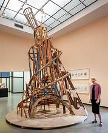

Dwarsverbanden
- Dit kunstwerk gaat over de soviet unie. Na de 1ste wereld oorlog was er tussen Amerika en de soviet unie een ruzie. Beide landen wouden laten zien dat ze beter waren dan het andere land. Dus de soviet unie had als idee om na de oorlog met al het puin een gebouw te maken van 400 meter hoog. Het Gebouw was bedoeld de overheid.